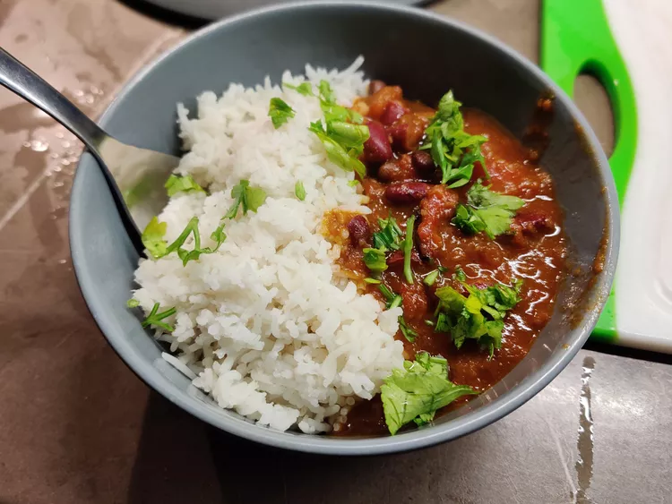

Rajma Masala

Description
Rajma is a popular vegan dish from the Indian subcontinent, consisting of red kidney beans in a thick gravy with many aromatic spices. It is usually served with rice. The North Indian Punjabi style of making Rajma Masala is the most loved Indian bean recipe. Combine Rajma with rice, called Rajma Chawal, is the most popular comfort food in North India.
Ingredients
- 2 cups dried kidney beans soaked overnight
- 1 onion roughly chopped
- cups fresh tomato puree
- 2 cups water
- 1/2 Serrano pepper or green chili
- 3 tablespoons oil of choice
- 1 teaspoon cumin seeds
- 1 bay leaf
- 2 teaspoons minced garlic
- 2 teaspoons minced ginger
- 2 and 1/2 teaspoons salt
- 1 teaspoon coriander powder
- 1 teaspoon garam masala
- 1 teaspoon paprika
- 1/2teaspoon black pepper
- 1/2 teaspoon turmeric
- Pinch of cayenne optional
- Cilantro
Steps
- Soak the kidney beans in cold water overnight. Drain, rinse and set aside.
- Add the onion and green chili to a food processor or blender and blend until smooth. Set aside.
- Press the sauté button on the Instant pot. Add the oil and allow it to heat up for a minute. Add the cumin seeds and once they become brown, add the blended onion and Serrano pepper to the pot and stir-fry for 8-10 minutes, or until the onion mixture begins to brown.
- Add the bay leaf, garlic, ginger, and spices and stir quickly, then add the pureed tomatoes and cook for 5 minutes, stirring occasionally.
- Add the kidney beans and water.
- Secure the lid, close the pressure valve and cook for 30 minutes at high pressure.
- Naturally release pressure.
- Garnish with cilantro and serve with rice.
Back to Home Page